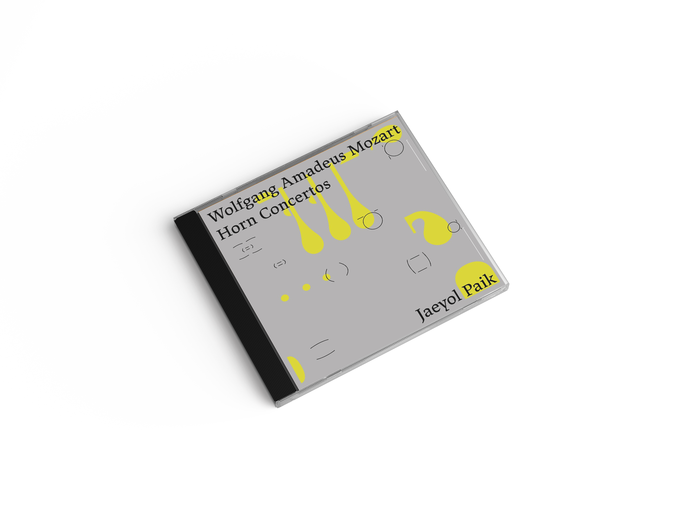
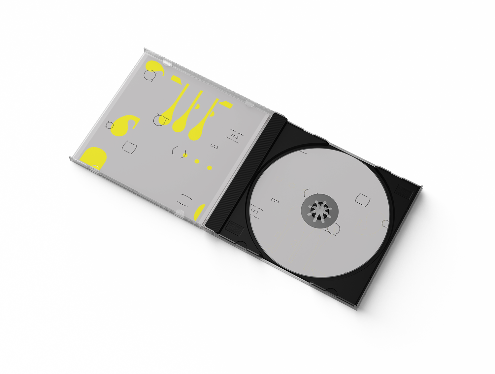
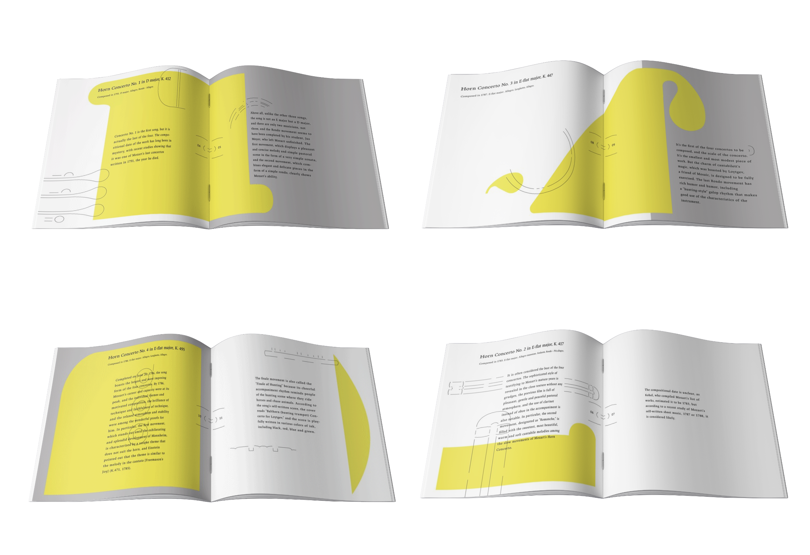

Mozart Horn Concerto Album (2020)
Graphics, Printings, Album design
I designed Mozart Horn Concerto Album. I set graphic identity through researching and interview with the player.
This concerto is well know for great understanding of horn structure.
I analyzed different horn parts, made them symbolized and used as graphic assets.
I designed album cover and leaflet.
모차르트 호른 협주곡 앨범
그래픽, 인쇄, 앨범 디자인
모차르트 호른 협주곡의 앨범을 디자인했다. 모차르트 호른 협주곡에 대한 리서치와 곡 연주자와의 인터뷰를 통해 그래픽 아이덴티티를 설정했다.
이 협주곡은 호른의 구조를 가장 잘 파악했다고 평가받는다. 호른의 구조를 분해하고 각기 다른 부품을 그래픽으로 나타냈다.
앨범 커버, 협주곡 소개 리플렛을 디자인했다.



